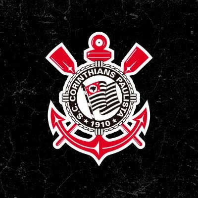

FIEL TORCIDA

A torcida do Corinthians é chamada carinhosamente de "Fiel". De acordo com uma série de institutos de pesquisas, como Ibope e Datafolha, além da Revista Placar, o Timão possui entre 27 e 33 milhões de torcedores(as) espalhados(as) pelo país, levando-se em conta, nas dadas pesquisas, brasileiros a partir de 10 ou 16 anos de idade, tendo a segunda maior torcida no Brasil, atrás nacionalmente somente do Flamengo. Todavia, pesquisas de abrangência nacional mais recentes apontam um forte crescimento da torcida corintiana nos últimos anos, reduzindo a distância em relação aos rubro-negros cariocas. Pelos dados do Datafolha, em 2014, que considera torcedores(as) a partir de 16 anos de idade (em um universo de 202,9 milhões de brasileiros), são 28,4 milhões de corintianos em todo o Brasil, sendo que na faixa de renda familiar mensal superior a 10 salários mínimos, o Corinthians lidera com 17,6% dos brasileiros(as), bem acima do Flamengo que possui 10,9% nesta faixa e o São Paulo que possui 9,2% da população mais rica. O crescimento alvinegro é percebido ao comparar a última pesquisa do Ibope, em 2010, que levava em conta torcedores com 10 anos ou mais e estimava 21,7 milhões de alvinegros espalhados pelo país.
TORCIDA ORGANIZADA
O Corinthians tem como principais Torcidas Organizadas a Gaviões da Fiel, a Camisa 12, a Pavilhão 9 e a Estopim da Fiel. Fundada em 1969, a Gaviões da Fiel é a maior delas e possui mais de 100 mil sócios. Gaviões e Camisa 12 têm rivalidade histórica, pois a segunda nasceu de uma divisão entre diretores da primeira, dois anos depois da fundação dos Gaviões. Hoje, existe uma divisão por razões políticas dentro da própria Gaviões da Fiel. Em jogos do clube como mandante, as quatro maiores torcidas corintianas cantam geralmente suas próprias músicas. As letras cantadas pelos integrantes da Gaviões da Fiel sobressaem-se sobre as demais torcidas uniformizadas, devido ao maior número de integrantes, e costumam ser acompanhadas pelos outros torcedores, normalmente desvinculados a qualquer facção, espalhados pelo estádio.
Há oito anos, Corinthians embarcava para o Japão com invasão da torcida no aeroporto. No dia 03 de dezembro de 2012, o Corinthians chegava ao Aeroporto Internacional de Guarulhos para viajar para o Japão e disputar o Mundial de Clubes da FIFA. Depois de acompanhar as glórias do Timão na conquista da Libertadores, a torcida marcou presença em peso. Aproximadamente 15 mil torcedores compareceram para se despedirem dos jogadores e comissão técnica. No dia 03 de dezembro de 2012, o Corinthians chegava ao Aeroporto Internacional de Guarulhos para viajar para o Japão e disputar o Mundial de Clubes da FIFA. Depois de acompanhar as glórias do Timão na conquista da Libertadores, a torcida marcou presença em peso. Aproximadamente 15 mil torcedores compareceram para se despedirem dos jogadores e comissão técnica. Entretanto, a festa não pararia no aeroporto. A “invasão” foi até o Japão, e aproximadamente 40 mil torcedores atravessaram o planeta e viajaram mais de 18 mil quilômetros para verem o Corinthians disputar o Mundial. O primeiro jogo, contra o Al-Ahly, do Egito, seria no dia 12 de dezembro – a final, diante do Chelsea, quatro dias depois.